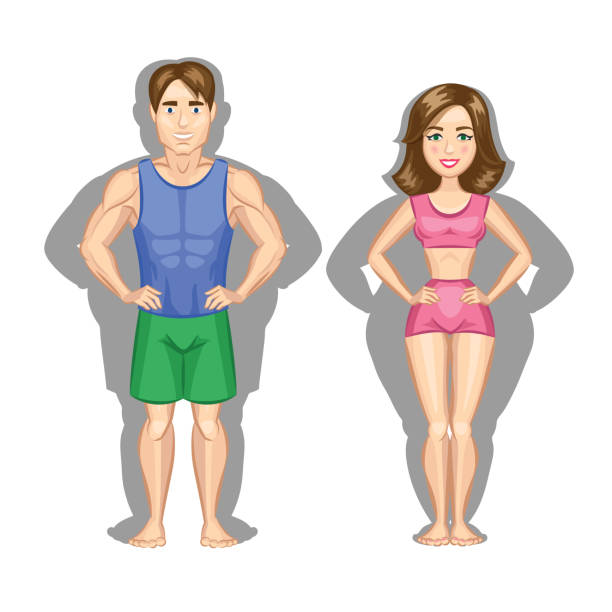

Sinnfull Cardio
Bewegung muss weder Qual noch Zeitverschwendung sein. Wer sie clever integriert, gewinnt doppelt – für Körper und Geist.

Was bedeutet „Sinnfull" Cardio?
Hinter dem Begriff steckt ein einfacher Gedanke: Bewegung sinnvoll in den Alltag integrieren, anstatt sie als lästige Pflicht zu betrachten. Das beginnt bei kleinen Dingen – öfter die Treppe statt den Aufzug nehmen, das Fahrrad für kurze Wege nutzen oder eine Strecke zu Fuß zurücklegen, wenn es sich anbietet.
Jede dieser kleinen Entscheidungen addiert sich. Über Wochen und Monate macht der Unterschied zu einem sitzenden Alltag einen enormen Unterschied auf dem Weg zu deinem Ziel.
Die richtige Form finden
Zusätzlich lohnt es sich, eine Form von Cardio zu finden, die dir gefällt – oder zumindest nicht abschreckt. Denn genau hier hältst du eine weitere wirksame Stellschraube in der Hand: etwas, das du langfristig durchhältst, weil es sich nicht wie ein Opfer anfühlt.
Ob Radfahren, Spazierengehen, Schwimmen, Tanzen oder Rudern – entscheidend ist nicht die Intensität, sondern die Regelmäßigkeit.
Die Doppelnutzung der Zeit
Schon seit meiner Jugend habe ich abends oft auf dem Sofa gesessen – am Handy Dinge sortiert, bearbeitet oder programmiert. Heute erledige ich das auf dem Liegefahrrad im Fitnessstudio. Ich lese dort Bücher, etwas das zuvor kaum funktioniert hatte. Die Kombination aus Cardio und Lesen hat für mich eine Form der Bewegung entstehen lassen, die entspannt, bildet und mich gleichzeitig effektiv beim Abnehmen unterstützt.
Der große Vorteil: Du verlierst keine Zeit – du nutzt sie zweifach.
Dein Ziel ist erreichbar – wenn du anfängst und dran bleibst.
So integrierst du Cardio in deinen Alltag
Im Alltag
Treppe statt Aufzug, Fahrrad statt Auto, zu Fuß statt Bus – kleine Entscheidungen, die sich täglich summieren.
Doppelt nutzen
Podcasts hören, lesen oder Handy-Erledigungen während des Cardios – Zeit effizient nutzen und dabei in Bewegung bleiben.
Regelmäßigkeit
3–4 Mal pro Woche je 30–45 Minuten moderate Bewegung bringen deutlich mehr als einmal pro Woche exzessives Training.